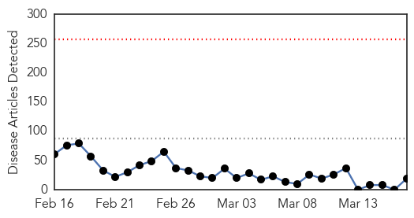
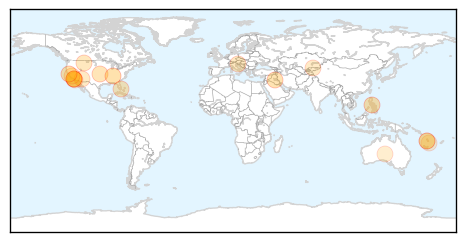

30 Day Trends
Web: 0 alerts, 0 warnings
Twitter: 3 alerts, 0 warnings
Top Articles:
- 0.980
- Anti-Vaccine Parents Largely Blamed For Disneyland Measles Outbreak
- 0.967
- Disneyland Measles Outbreak Confirmed to Be Linked to Low Vaccination Rates
- 0.965
- Measles Outbreak Probably Caused by General Low Vaccination Rates
- 0.912
- Low Vaccination Rates To Blame for Disneyland Measles Outbreak
- 0.900
- WHO sounds alarm bell in Iraq
- 0.841
- Aliso Niguel High School
- 0.837
- Parents Who Decline to Vaccinate Their Children Likely To Be Blamed for Disneyland Measles Outbreak, Study Says
- 0.835
- Low vaccination rates likely behind Disney measles outbreak
- 0.768
- New cases of disease reported on need-to-know basis
- 0.753
- Measles prevention campaign underway in Vanuatu, amid fears of disease outbreak - UNICEF
- 0.741
- Outbreak of measles also at Idrija-Cerkno region :: Prvi interaktivni multimedijski portal, MMC RTV Slovenija
- 0.695
- Data suggest low vaccination rates, measles outbreak related
- 0.693
- Less Than 86% Of Disney Guests Were Vaccinated Against Measles
- 0.685
- Measles prevention campaign gets underway in Vanuatu
- 0.671
- Kyrgyz Lauch Mass Vaccination as Measles Cases Soaring
- 0.640
- Anti-vaccination Activists and Campaigns Held Responsible For Recent Measles Outbreak Linked to Disneyland
- 0.569
- Imojev (Japanese encephalitis vaccine) Drug
- 0.551
- UN Raises Death Toll in Vanuatu to 24 After Passage of Cyclone Pam
- 0.503
- Solana Beach School District backs bill ending personal belief exemption for vaccinations
Top Tweets:
-
No tweets found for Mar 17, 2015
Web/News Articles
Tweets

Article Locations
Article Confidences